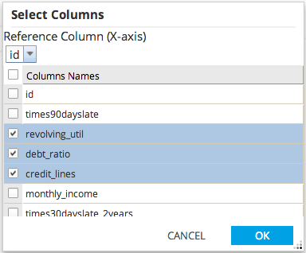
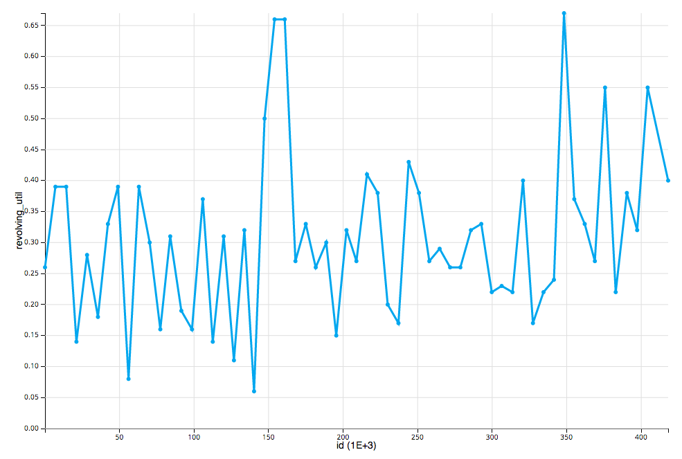

The Univariate Plot Chart allows users to choose a Reference Column (x-axis) and one or more Y Columns from the dataset.
All the columns must be of numerical type. A univarite chart will be created for each Y column selected.

